sample 2.1_ultrasonic cleaned
Voxel size 0.4815 µm (cubic) · volume 61 × 512 × 512 voxels (z, y, x) = 29 × 247 × 247 µm · exported 2026-10-07 from Texas red 20min_24.8.2026.lif.
Downloads: osteocyte_props.csv · dendrites.csv · summary.log · summary.json · scene.glb · scene_obj.zip
3D scene
Drag to rotate, scroll to zoom, right-drag to pan. One colour per osteocyte; cleaned ch0 nuclei inside the hull (bone side) in translucent blue. Depth (z) points up. scene_obj.zip has the same scene as OBJ + MTL in µm, with and without the nuclei.
Pipeline counts
| stage | count |
|---|---|
| watershed regions | 116 |
| >= 100 voxels and > 5 vox inside xy hull (pass 1) | 59 |
| > 0 vox inside hull without soft tissue (pass 2) | 48 |
| removed: far side of soft tissue | 3 |
| removed: no nucleus | 22 |
| split by nuclei | 0 |
| removed: flat | 2 |
| surviving osteocytes | 21 |
| nuclei (cleaned ch0) | 46 |
| inside hull, bone side | 35 |
| detected | 21 |
| soft tissue | 3 |
| labelled, rejected | 5 |
| no ch1 label | 6 |
| inside hull, not labelled as osteocyte (rejected + no ch1) | 11 |
Osteocytes
| label | volume (µm³) | surface (µm²) | axis 1 (µm) | axis 2 (µm) | axis 3 (µm) | flatness | nuclei | nucleus (µm³) | dendrites | reach mean (µm) | reach sd (µm) | reach max (µm) | path mean (µm) |
|---|---|---|---|---|---|---|---|---|---|---|---|---|---|
| 18 | 975 | 1903 | 44.21 | 16.57 | 6.72 | 0.41 | 1 | 46.32 | 12 | 5.87 | 3.89 | 12.78 | 18.37 |
| 21 | 740 | 1435 | 43.40 | 11.43 | 6.72 | 0.59 | 1 | 50.23 | 7 | 5.74 | 4.03 | 13.86 | 28.25 |
| 23 | 1051 | 1882 | 41.12 | 16.61 | 7.41 | 0.45 | 1 | 35.16 | 6 | 7.78 | 5.54 | 13.59 | 32.95 |
| 26 | 645 | 927 | 35.59 | 9.06 | 6.31 | 0.70 | 1 | 40.29 | 7 | 4.51 | 4.72 | 15.17 | 3.61 |
| 37 | 820 | 1249 | 39.52 | 10.29 | 8.01 | 0.78 | 1 | 34.26 | 7 | 10.39 | 6.36 | 19.94 | 14.72 |
| 38 | 611 | 763 | 27.12 | 8.79 | 7.17 | 0.82 | 1 | 34.60 | 6 | 6.62 | 6.36 | 18.23 | 6.27 |
| 39 | 560 | 889 | 34.25 | 11.05 | 6.63 | 0.60 | 1 | 36.61 | 9 | 4.94 | 3.79 | 12.08 | 7.39 |
| 47 | 472 | 584 | 23.38 | 8.91 | 5.58 | 0.63 | 1 | 30.02 | 3 | 3.48 | 0.79 | 4.39 | 1.70 |
| 55 | 758 | 1010 | 26.85 | 12.52 | 6.61 | 0.53 | 1 | 55.36 | 10 | 6.22 | 3.89 | 15.25 | 5.66 |
| 61 | 1432 | 2155 | 58.83 | 11.12 | 9.55 | 0.86 | 1 | 25.89 | 7 | 11.69 | 10.12 | 30.54 | 25.36 |
| 74 | 862 | 1532 | 39.55 | 16.20 | 7.38 | 0.46 | 1 | 26.23 | 7 | 4.18 | 3.84 | 12.50 | 23.21 |
| 77 | 694 | 1067 | 35.74 | 9.38 | 6.70 | 0.71 | 1 | 41.85 | 9 | 5.49 | 3.49 | 10.86 | 8.37 |
| 82 | 898 | 1311 | 52.60 | 8.52 | 5.85 | 0.69 | 1 | 25.45 | 5 | 6.04 | 5.95 | 16.44 | 15.29 |
| 87 | 2613 | 2837 | 43.98 | 16.86 | 9.41 | 0.56 | 1 | 33.04 | 11 | 4.38 | 4.72 | 18.28 | 7.90 |
| 117 | 1538 | 2046 | 37.53 | 14.95 | 8.93 | 0.60 | 1 | 36.83 | 6 | 8.82 | 7.79 | 24.08 | 18.72 |
| 124 | 1501 | 1897 | 38.93 | 15.29 | 8.53 | 0.56 | 1 | 26.90 | 10 | 3.67 | 1.16 | 6.13 | 7.17 |
| 134 | 1279 | 1753 | 41.49 | 10.97 | 8.24 | 0.75 | 1 | 28.01 | 7 | 5.11 | 5.15 | 16.63 | 17.41 |
| 140 | 1254 | 1963 | 39.23 | 12.58 | 9.22 | 0.73 | 1 | 33.26 | 5 | 7.47 | 5.92 | 17.87 | 42.20 |
| 146 | 629 | 872 | 35.85 | 8.96 | 6.85 | 0.76 | 1 | 24.67 | 3 | 9.00 | 10.37 | 20.93 | 13.06 |
| 150 | 430 | 777 | 37.81 | 9.53 | 6.35 | 0.67 | 1 | 30.14 | 6 | 7.93 | 8.70 | 23.82 | 15.19 |
| 160 | 1651 | 2184 | 41.75 | 13.38 | 11.19 | 0.84 | 1 | 25.78 | 8 | 4.99 | 3.01 | 10.13 | 12.88 |
Gallery
Rotating maximum-intensity projections of ch1 inside each osteocyte. Click a cell for its 3D mesh.
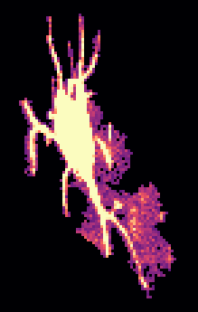
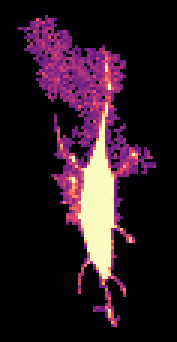
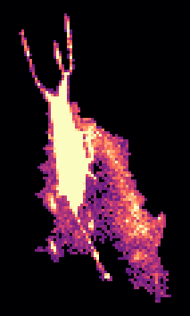
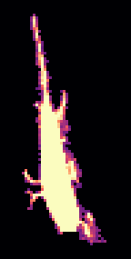
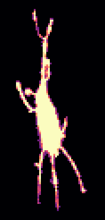
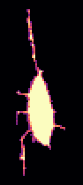
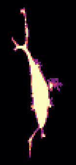
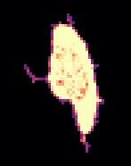
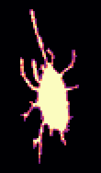
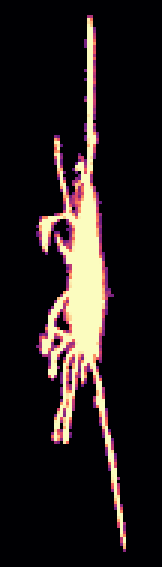
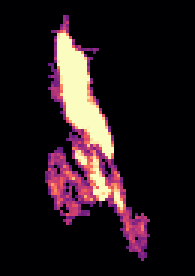
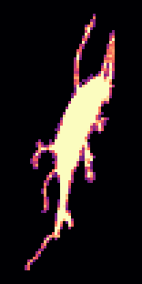
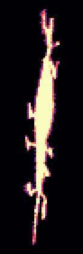
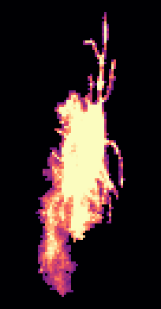
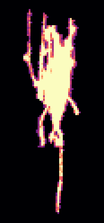
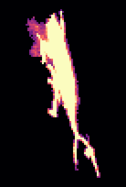
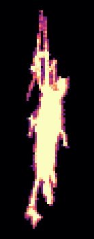
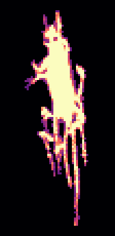
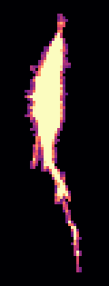
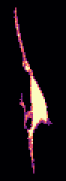
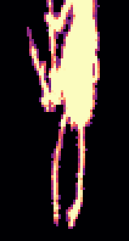